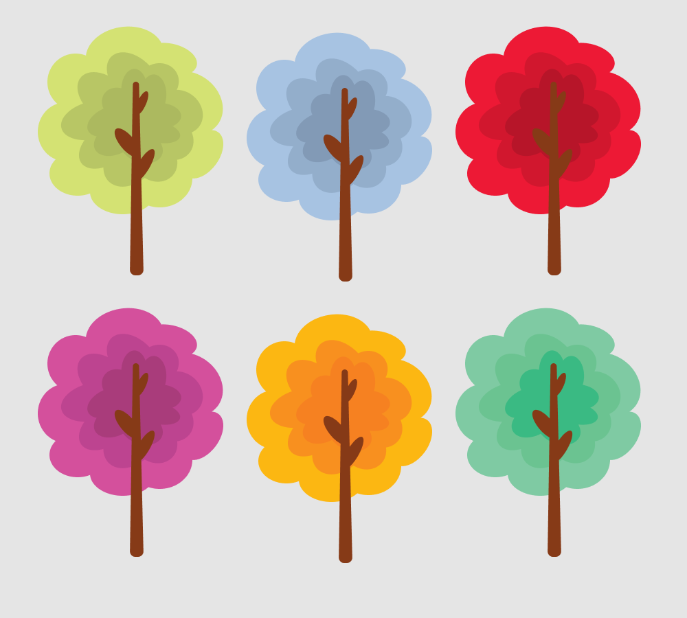

Environmental Central: Exploring Persuasive Design
Made with Figma
PROBLEM
Many campus eateries offer plastic utensils and students absentmindedly reach for them, use them for one meal, and dispose of them. This leads to a build-up of non-durable plastic utensils in the environment and endangers wildlife. Animals can get trapped in plastic, eat it, and become sick. Even though most students know that non-durable plastics are harmful to the environment, they continue to use them instead of bringing their own reusable cutlery.
REQUIREMENTS
• Utilize the "persuasive design" approach to encourage the target audience to think about the issue at hand rather than provide a realistic solution.
• Identify a social or political issue
• Choose a concrete behavior related to this issue that the design will aim to change
• Sketch out three early designs
• Reflect on early designs and develop a final idea
• Evaluate the final design: analyze its strengths and potential pitfalls
SOLUTION OVERVIEW
The Environmental Central is a set of friendship bracelets that are linked together via a network on a user’s phone. Each bracelet is able to detect when its wearer sits down for a meal and automatically snaps a picture of the utensils the user has picked up. It then sends this picture to a general conversation space that everyone in the network is in. Once a picture is sent, everyone else in the network is notified and can reply to it.
The affordance that the Environmental Central instantiates is that of providing social support and sanctions. This means that it plays on people’s desire to connect with and please their friends as well as not be ashamed in front of them. The way that this design implements this affordance is by allowing various users to form a connected network that lets them communicate with each other. This aspect of the Environmental Central appeases people’s desire to connect with other. Another aspect of this design that implements this affordance is the general conversation space where users can compare their actions with those of others. This platform is where users can charm their friends and be faced with social sanctions. Since users can see what types of utensils other people in their network are using and what comments follow each one, they can determine what actions are perceived positively and negatively. For instance, if the picture sent to the general conversation space is a meal accompanied by metal utensils, then others in the network will respond with positive comments, and the user will be encouraged to keep using metal utensils in order to keep raking in positive responses. However, if the picture contains non-durable plastic utensils, then others will respond with negative comments, and the user will feel ashamed. This will cause the user to steer away from using non-durable plastic utensils and drive the user to use reusable utensils to stop receiving negative replies.
The design’s implementation of this persuasive affordance will change users’ patterns of plastic utensil use. Considering that users will be applauded when their pictures contain reusable utensils and derided when they contain non-durable plastic ones, users will be discouraged from reaching for disposable plastic utensils during their meals. They will be pushed to use the metal utensils available or to purchase their own portable cutlery set. Ultimately, by invoking social support and sanctions, the Environmental Central urges its users to cut down on using disposable plastic utensils, hence decreasing plastic build-up in the environment and conserving wildlife.
PROCESS
Issue
There is a build-up of disposable plastic utensils in the environment - from forests to oceans - and this endangers wildlife.
Focus Behavior
College students nonchalantly use plastic utensils, toss them out, and add to plastic waste. About 40 billion individual plastic utensils are produced yearly in the U.S, and due to low rates of reuse and recycling, 6 million of them are thrown out each year. In order to strive towards sustainability, this number should be reduced by at least 50%.
Initial Sketches
Motivate Through Experience/Sensation: VR of environment of animals being harmed by plastic.
Provide Social Support or Sanction: Chat about plastics use.
Increase Self-Efficacy: Virtual log of a user's plastic items.